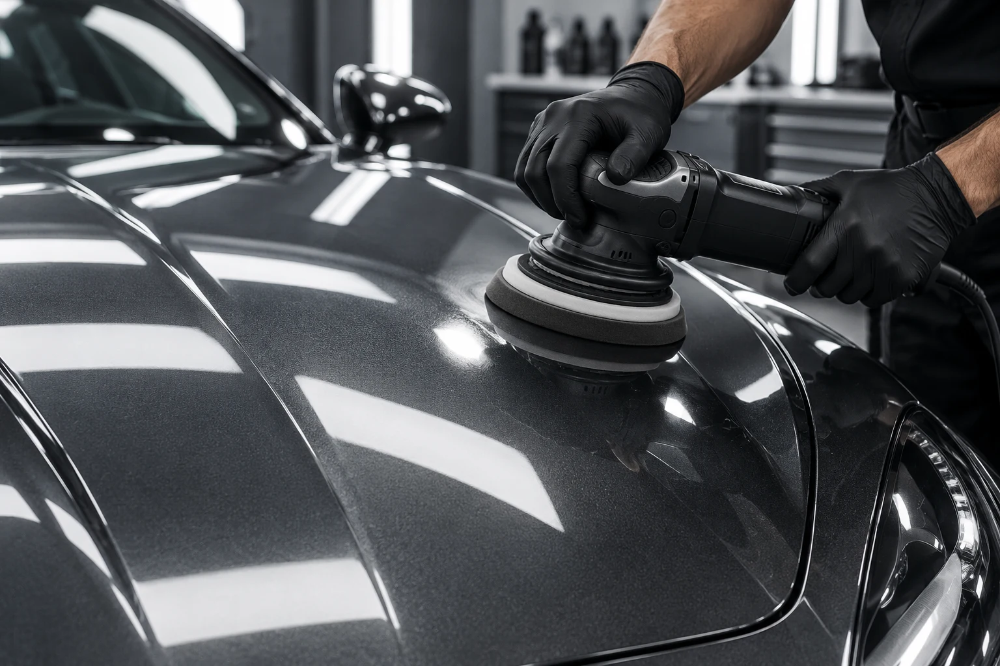

Полировка и покрытия
Глубина цвета.
Чистота отражений.
Работа с лакокрасочным покрытием начинается с оценки его состояния. Цель — согласованный результат с учётом возможностей конкретной поверхности.
Подобрать программу
Состав работы
Каждый этап
имеет значение.
- 01
Диагностика поверхности
Осмотр при рабочем свете, оценка дефектов и возможностей коррекции.
- 02
Очистка и полировка
Подготовка, согласованная коррекция и финишная обработка выбранных элементов.
- 03
Защитное покрытие
Состав подбирается под задачу и подготовленную поверхность. Уход и ограничения обсуждаются при выдаче.
До начала
Что согласуется
со студией?
Состояние автомобиля, выбранные зоны, материалы, стоимость и срок. Дополнительная работа обсуждается до выполнения, а не появляется в счёте при выдаче.
После выполнения
Как сохранить
результат?
Получите рекомендации по уходу именно за выбранными материалами. Уточните технологические ограничения и подходящий режим дальнейшего обслуживания.
СОБЕРЁМ СОСТАВ ПОД ЗАДАЧУ
Ваш автомобиль.
Ваш выбор.
Перейти к подборуПредварительный расчёт — ориентир.
Окончательная стоимость определяется после осмотра.